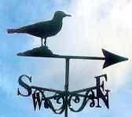

|
|
Our Mascot |
|
|
Our Mascot |
|

|
Jonathan the Seagull A
Summary of
|
||||
|
Seagull, Norway |
|||||
Jonathan Livingston Seagull, a novel by Richard Bach, is a much-loved classic that has touched the hearts of many. A tale of courage, truth and love, this beautiful story is a rich and vibrant literary work. This book centers on the character development of Jonathan Livingston Seagull, who changes from a quiet and timid young seagull to an enlightened, brave and courageous being. The story begins with Jonathan as a lonesome seagull wants to get beyond the boring world of eating, mating and sleeping that most gulls live in, in order to survive. But he did not want to just survive, he wants to transcend all barriers and go beyond the limits of being a seagull: "It was morning, and the new sun sparkled gold across the ripples of a gentle sea. A mile from shore a fishing boat chummed the water; and the word for Breakfast Flock flashed through the air, till a crowd of a thousand seagulls came to dodge and fight for bits of food. It was another busy day beginning. "But way off alone, out by himself beyond boat and shore, Jonathan Livingston Seagull was practicing. A hundred feet in the sky he lowered his webbed feet, lifted his beak, and strained to hold a painful hard twisting curve through his wings. The curve meant that he would fly slowly, and now he slowed until the wind was a whisper in his face, until the ocean stood still beneath him. He narrowed his eyes in fierce concentration, held his breath, forced one... single... more... inch... of... curve... Then his feathers ruffled, he stalled and fell." For most gulls all that really mattered was how to get to the shore and back with some food. But for Jonathan, all that mattered was flight.
Jonathan became very adept at low-level flying, stalling in the air and doing many other aero-dynamic maneuvers. As soon as the elders in his flock learned of these uncommon feats, they decided to shun him for violating the dignity and tradition of the Gull Family. They told him that, Life is the unknown and the unknowable, except that we are put into this world to eat, to stay alive as long as we possibly can. To this statement he responded, "Who is more responsible than a gull who finds and follows a meaning, a higher purpose for life? For a thousand years we have scrabbled after fish head, but now we have a reason to live - to learn, to discover, to be free! Give me one chance, let me show you what I've found." With this statement, Jonathan began to speak up for himself. He became bolder about sharing his discoveries. However, no gull had ever spoken back to the elders, as did Jonathan, so he was immediately banished. He spent countless days on his own. He was distressed not because of the abandonment by his flock, but because they refused to believe the glory of flight that awaited them; they refused to open their eyes and see. He was getting pretty used to being alone and adventuring to unknown places and reaching new heights and new speeds with flying.
Jonathan thought that he was certainly in heaven. He found great comfort in that these birds thought as he thought. For them, the most important thing in living was to reach out and touch perfection in that which they most loved to do, and that was to fly. They were magnificent birds all of them, and they spent hour after hour every day practicing flight, testing advanced aeronautics One evening Jonathan heard that an Elder Gull would soon be moving on to the next world. He mustered up his courage and walked up to that gull to ask him something that was stirring deep inside of him. The following exchange was a turning point in Jonathan's life. "Chiang?" he said, a little nervously. The
old seagull looked at him kindly. "Yes, my son?" The
Elder smiled in the moonlight. "You are learning again,
Jonathan Seagull," he said. From this moment on Chiang took Jonathan under his wing, so to speak. He became his mentor and his best friend. The Elder Gull taught him much about flight, but most importantly about going beyond his limits. He learned how to disappear and reappear in a different location and many other awe inspiring things. He told him that the gulls who scorn perfection for the sake of travel go nowhere, slowly. Those who put aside travel for the sake of perfection go anywhere instantly. Pretty soon all the gulls were in awe of Jonathan. But as he grew wiser, he also grew humbler, for such is the nature of wisdom. Everyone asked for him to teach them what he knew. Jonathan, in his humility told them that he had just arrived in this new world, and it was them that needed to teach him. After months of studying and learning with Chiang, it was time for the Elder to move on. Before leaving he reminded Jonathan to keep working on love. As the days went on Jonathan couldn't help but think about the past. He thought of all the gulls who were living and dying over breadcrumbs. Then he wondered whether there was a gull who was made an outcast for living his truth in the face of the other gulls. The more he practiced his kindness lessons, the more he wanted to go back to Earth. For in spite of his lonely past, Jonathan Seagull was born to be an instructor, and his own way of demonstrating love was to give something of the truth that he had seen to a gull who asked only a chance to see truth for himself. Since his meeting with Chiang, Jonathan began to believe in himself and the power of love more than he had ever known. As his spirit became stronger, his soul became kinder, and out of kindness he wanted to take back to others what he had learned. The others told Jonathan to stay and help the birds that were coming to their world instead. It would be too difficult to go back to the world where he was once deserted. He agreed for some time, but he couldn't help but remember his old life. He thought to himself how far ahead he would have been if Chiang had shown up the day he was outcast. He decided that he indeed needed to go back. Jonathan appeared just in time to witness the rejection of Fletcher Lynd Seagull by his flock. Fletcher flew away with anger in his eyes. Jonathan Seagull flew next to him and told him that by casting him out, they had only hurt themselves. He asked Fletcher to forgive them, for they knew not what they were doing. Soon, Jonathan had become to Fletcher, what Chiang was to him. He taught Fletcher how to go beyond limitations and to touch Heaven. As time went on other outcasts joined Jonathan. At night Jonathan would tell them that they were only as limited as they believed. He told them at their whole body was nothing but thought, and if they could break the chains of thought, they could break the chains of their bodies too. All this sounded like science fiction to these gulls who could not believe it at first. One day Jonathan told them that it was time to go back to the others. They were ready now to help the other seagulls to see. They all refused to go, so Jonathan flew all alone into the sky. The gulls were concerned about their teacher going alone, so they soon joined him. Jonathan taught his students flying lessons right above the other flocks. But down below, the others were warned not to watch, for looking at an outcast would make one into an outcast too. Shortly the few students became more and more, and were coming from all places. Soon a sickly looking bird came and told Jonathan that he wanted nothing else but to fly. Unfortunately his wings were injured, so he could not. To this he was told by Jonathan, You have the freedom to be yourself, your true self, here and now, and nothing can stand in your way. Believing this he spread his wings and flew. He shouted with great glee as the others watched him in wonderment. Before long, thousands of birds flocked around and began to listen to what was being told by Jonathan. As he taught others, he inspired multitudes to come and join. He became like another messiah, only he told the gulls that he was no more divine than they were, except that he took the risk to learn. Soon, it was time for Jonathan to move on to the other world, but he left his work with Fletcher Seagull to continue. In this wonderful story of triumph and love, Jonathan Livingston Seagull was able to find his own inner strength through teaching others about the gifts that they had inside. He became enlightened in the process of enlightening others. In this delightful novel, the reader has flown into the world of the birds and shall come out transformed through a myriad of inspiration, wisdom and literary excellence.
(Summary
by Sangeeta Kumar
of San Diego, USA.) | |||||
|
The New York Times, July 3, 1974
Des Moines, Iowa, July 2 - John H. Livingston, the man who inspired the best-selling novel "Jonathan Livingston Seagull,'' died Sunday at the Pompano Beach (Fla.) Airport soon after completing his last plane ride. Richard Bach, a former Iowa Air Guard pilot, has said his best-selling book about a free-wheeling seagull was inspired by Mr. Livingston. Johnny Livingston, as he was known, moved many years ago from Iowa to Florida. He was one of the country's top pilots during the barnstorming days of the nineteen-twenties and thirties. From 1928 through 1933, Mr. Livingston won 79 first places, 43 seconds and 15 thirds in 139 races throughout the country, many of them at Cleveland. He won first place and $13,910 in 1928 in a cross-country race from New York to Los Angeles. Mr. Livingston leaves his wife, Wavelle, two brothers and four sisters.
| |||||
|
| Duplicate postings to the
web are encouraged and appreciated. That will ensure the free access to the technology. |